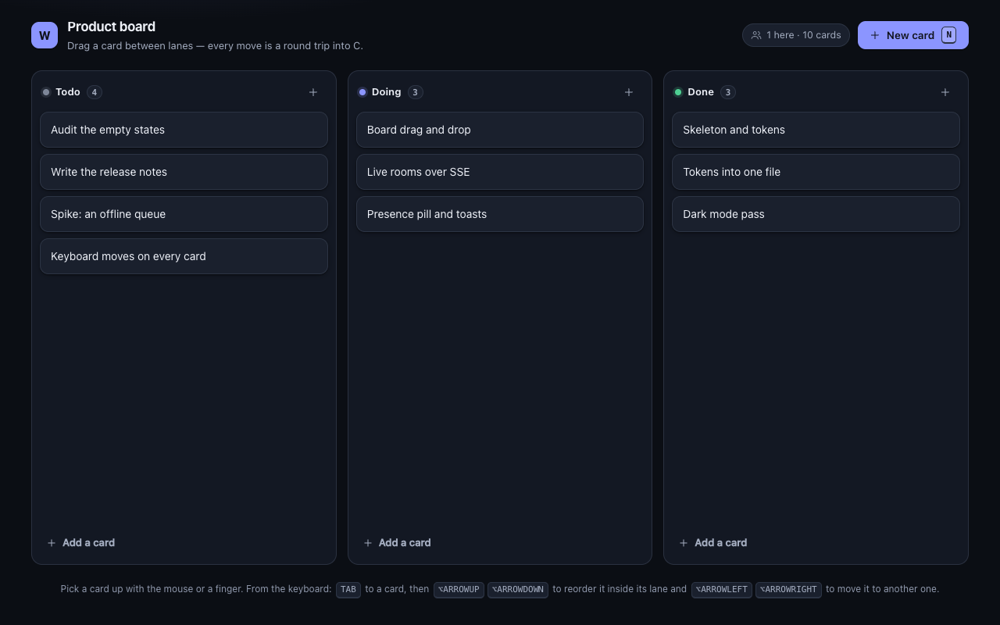

Board
A kanban with live rooms, drag and drop, and a real database.

examples/board — screenshot taken from webc dev.webc.json
{
"name": "board",
"version": "0.1.0",
"database": "sqlite:data/board.db",
"port": 8080,
"dev": {
"port": 9999
},
"server": [
"src/server.c"
],
"shared": [
"src/view.c"
],
"client": [
"src/client.c"
],
"boot": {
"title": "Board",
"lang": "en",
"css": [
"/public/style.css",
"/public/stdlib/overlay.css"
],
"el": "#root",
"data": "/api/board",
"hydrate": true
},
"budget": {
"wasm": 53248
}
}src/app.h
// The board's whole data model, and the one thing both halves need to agree on: what a lane is
// called. Nothing in this file can reach a database or a request — that is what
// <webc/shared.h> is for, and the compiler enforces it.
#pragma once
#include <webc/dnd.h> // WDrag: the index maths the rows and the drop share
#include <webc/shared.h>
WEBC_MODEL(Card, (id, i64, .pk = true),
(title, Text, .required = true, .max = 80),
(lane, i32, .not_null = true, .gte = 0, .lte = 2),
(position, i32, .not_null = true, .gte = 0))
// A move, as the client computed it: the card that leaves `(from_lane, from)` and the index it
// takes in `(to_lane, to)`. `to` is the position in the target lane *once the card has left* —
// the off-by-one that makes a hand-written kanban shuffle the wrong card is dnd.h's, not the
// app's. A move is a request body, validated by `body(Move)` and never stored, so
// `WEBC_MODEL_INTERNAL` is the one line that says "no table for this" — without it the schema
// check asks for a `moves` table nobody meant to create.
WEBC_MODEL(Move, (from_lane, i32, .gte = 0, .lte = 2), (from, i32, .gte = 0),
(to_lane, i32, .gte = 0, .lte = 2), (to, i32, .gte = 0))
WEBC_MODEL_INTERNAL(Move)
// The same trick for the one other body the board takes: a card id to drop.
WEBC_MODEL(Erase, (id, i64, .gte = 1))
WEBC_MODEL_INTERNAL(Erase)
Vec(Card)
// The whole board as one document, which is what a room carries and what every route answers.
// A bare array would do for the wire; a named document is what `WStore` decodes (`store_read`),
// and a frame decoded into a store generation is a frame whose strings live exactly as long as
// the board shows them — the alternative is a hand-rolled arena per frame.
WEBC_DOCUMENT(BoardDoc, (cards, VecCard))
#define LANES 3
static inline const char *lane_name(i32 lane) {
switch (lane) {
case 0: return "Todo";
case 1: return "Doing";
case 2: return "Done";
default: return "—";
}
}
// The view's context: the rows the server read. One struct, so the same view renders from
// either half and the client's mutations are the only difference between them.
typedef struct BoardCtx {
VecCard *cards;
} BoardCtx;
declare_view(Board, BoardCtx);
// The interaction states. They are declared here rather than in view.c because two files read
// them: the view draws the drag and the toast, the client's actions write them. `state` makes
// one weak slot per name, so the writer and the reader are the same variable whatever file
// each is compiled into.
state(bool, open_new, false);
state(i32, new_lane, 0); // the lane the New card dialog will add to
state(Text, toast_msg, "");
state(i64, drag_id, -1); // the card the press landed on, by id (0 = none)
state(bool, carrying, false); // and whether the press has become a drag the board should draw
state(Text, drag_title, ""); // its title, for the card that follows the pointer
state(i32, drag_lane, -1); // the lane it came from
state(i32, drag_from, -1); // and its index inside that lane
state(i32, drop_lane, -1); // the lane the pointer is over
state(i32, drop_at, -1); // where the card would land there, already adjusted
state(f64, ghost_x, 0); // the carried card's position on the page
state(f64, ghost_y, 0);
state(f64, press_x, 0); // where the press started: a click is not a drag
state(f64, press_y, 0);
state(f64, drag_w, 0); // the picked card's width: the ghost is the size of the card // the picked card's width: the ghost is the same size as the card
state(i32, here, 0); // how many people are looking at this board
// How many cards are in a lane, and the nth of them: two lines both halves share, so the
// server and the client cannot disagree about what a lane contains.
//
// A plain `for`, not `for_each`: `for_each` is a *render* loop — each pass opens a keyed item
// scope on the node currently open and sweeps the items the pass did not claim. Calling it to
// count runs that sweep on whatever element the view happens to have open (`fe.h` says so in
// as many words).
static inline i32 cards_in(VecCard *cards, i32 lane) {
i32 n = 0;
for (i32 i = 0; cards && i < vlen(cards); i++) n += vat(cards, i).lane == lane ? 1 : 0;
return n;
}
static inline Card *card_at_lane(VecCard *cards, i32 lane, i32 i) {
i32 at = 0;
for (i32 k = 0; cards && k < vlen(cards); k++) {
Card *c = &vat(cards, k);
if (c->lane != lane) continue;
if (at == i) return c;
at++;
}
return nullptr;
}
static inline Card *card_by_id(VecCard *cards, i64 id) {
for (i32 k = 0; cards && k < vlen(cards); k++)
if (vat(cards, k).id == id) return &vat(cards, k);
return nullptr;
}src/client.c
// The client half: the same view the server rendered, mounted over the page's markup, plus the
// four things only a browser can do — pick a card up, put it down, take a live document, and
// say how many people are here.
//
// A shared view *names* its controls (`named("card")`); this file says what the names do. That
// split is what lets one view compile for both halves: the server has no actions to point at.
// It is also why the shortcut table lives here and not in the view — a `WCmd` carries a
// function pointer, and a function pointer does not exist on the server (the open part of P4).
//
// The drag is pointer events, not the HTML drag family: a planchette that follows the mouse is
// the same code on a trackpad, a pen and a thumb, and `ev_point()` already hands an action the
// pointer — page coordinates, the element's box, and where inside it the pointer is. That is
// the whole of what a drag needs to know, and the index maths is `dnd.h`'s.
#include "app.h"
#include <webc/host.h>
#include <webc/keys.h>
#include <webc/live.h>
#include <webc/web.h>
// The board the views read, and the store the frames arrive in. A frame's strings belong to the
// frame: they die when the callback returns and the next frame reuses the bytes, which is a board
// drawing one request's titles out of another request's memory. `WStore` is the framework's answer
// — two generations that take turns, so the rows a render is reading outlive it — and `g_cards` is
// the live generation, copied row for row on every good frame.
static VecCard g_cards = {.desc = &WC_VECDESC_VecCard};
static BoardCtx C = {.cards = &g_cards};
static WStore g_room;
// Every frame is the whole board, so loading one is the same operation as loading the seed:
// decode, replace, redraw. A decoder that is idempotent is what makes a reconnect free.
static void board_load(str json) {
if (!g_room.doc && !store_init(&g_room, BoardDoc_docof(), sizeof(BoardDoc))) return;
BoardDoc *doc = store_read(&g_room, json);
if (!doc) return; // a frame nobody can read leaves the board as it was
g_cards = doc->cards;
}
void wc_app_data(str json) { board_load(json); }
ACTION(new_open)
ACTION(new_close)
ACTION(lane_add)
ACTION(card_del)
ACTION(card_pick)
ACTION(card_hover)
ACTION(lane_hover)
ACTION(board_hover)
ACTION(card_drop)
ACTION(card_up)
ACTION(card_down)
ACTION(card_left)
ACTION(card_right)
ACTION(escape)
static const WCmd CMDS[] = {
K("New card", "n", new_open),
// one action for Escape: a dialog that is open closes, a card in the air goes back
K("Close or cancel", "escape", escape),
// the keyboard half of drag: `dnd_keys()` announces these two on every row, and an
// announcement with no binding is a lie (`webc check` cannot see keys.h tables)
K("Move card up", "alt+arrowup", card_up),
K("Move card down", "alt+arrowdown", card_down),
K("Move card left", "alt+arrowleft", card_left),
K("Move card right", "alt+arrowright", card_right),
};
// ---------------------------------------------------------------- the two halves of a drag
// `dnd.h`'s arithmetic, asked about a lane that may not be the card's own. For the source lane
// the card that left is missing from the list the index counts, which is the off-by-one the
// module exists for; for any other lane nothing left, so the raw index is already the answer.
static i32 insert_index(i32 lane, i32 raw, bool after, i32 over) {
WDrag d = {.from = lane == (i32)get(drag_lane) ? (i32)get(drag_from) : -1,
.over = over,
.after = after,
.n = cards_in(&g_cards, lane)};
if (d.from < 0) return raw;
return dnd_drop(&d); // -1 when the card would land where it already is
}
static void drag_clear(void) {
set(carrying, false);
set(drag_id, (i64)-1);
set(drag_title, fmt(""));
set(drag_lane, -1);
set(drag_from, -1);
set(drop_lane, -1);
set(drop_at, -1);
}
// ---------------------------------------------------------------- the new-card dialog
action(new_open) {
set(new_lane, 0);
set(open_new, true);
}
// Every lane has its own way in, and the dialog remembers which one asked: "add a card" is a
// kanban gesture, and a card that always lands in Todo is a card you then have to drag.
action(lane_add) {
set(new_lane, (i32)ev_attr_i64("data-lane"));
set(open_new, true);
}
// … 220 more lines in the repositorysrc/server.c
// The server half: the same view rendered with a context, the routes that change it, and the
// live room that tells every open tab about the change.
//
// Every answer is the model — no JSON is written by hand, and no SQL either (the migration
// below is the model's own).
#include <webc/live.h>
#include <webc/server.h>
#include "app.h"
#include <webc/motion.h>
// The board's rows, in the order the board shows them: lane, then position. Every reader of
// the board goes through this, so the page, the API and the broadcast cannot disagree.
static VecCard *board_rows(void) { return db_all_ordered(db_default(), Card, "lane, position"); }
// The document a room carries, and the one every route answers: the whole board, every time. A
// frame that were a diff would leave a client that missed one frame wrong forever (live.h).
static str board_doc(void) {
BoardDoc d = {.cards = *board_rows()};
return BoardDoc_write(wc_arena_get(), &d);
}
// `json(200, str)` is bytes that are already JSON, which is the one shape a *document* has:
// `json()` writes a model or a collection, and this answer is a document wrapped around one.
static Response board_reply(i32 status) { return json(status, board_doc()); }
static void board_publish(void) { live_broadcast("board", "1", board_doc()); }
// Cards of one lane, in position order. Insertion sort by hand: a lane is ten rows, and the
// point of the loop is that it is shorter than the call to qsort.
static VecCard lane_rows(VecCard *all, i32 lane) {
VecCard out = {.desc = &WC_VECDESC_VecCard};
for_each(c, (*all)) {
if (c->lane != lane) continue;
i32 at = vlen(&out);
while (at > 0 && vat(&out, at - 1).position > c->position) at--;
Card copy = *c;
push(out, copy);
for (i32 i = vlen(&out) - 1; i > at; i--) vat(&out, i) = vat(&out, i - 1);
vat(&out, at) = copy;
}
return out;
}
// Number a lane 0..n-1 and write the rows that changed — position, or the lane itself for the
// card that just crossed in. A kanban re-numbers both lanes it touched, and a board that leaves
// gaps in `position` is one reorder away from sorting the wrong way.
//
// The lane is part of the comparison, not a loop of its own: the card that arrives at index 0
// of a new lane already has position 0, so a check on position alone skipped it and saved
// nothing — the card stayed in the lane it came from.
static void lane_renumber(VecCard *lane, i32 lane_no) {
for (i32 i = 0; i < vlen(lane); i++) {
Card *c = &vat(lane, i);
if (c->lane == lane_no && c->position == i) continue;
c->lane = lane_no;
c->position = i;
db_save(Card, c);
}
}
GET("/") {
// the shelf's animation stylesheet, in the page head: one keyframe set, one stagger scale,
// and the reduced-motion switch that hand-rolled animation always forgets
motion_head_html();
return page(Board, &(BoardCtx){.cards = board_rows()});
}
GET("/api/board") { return board_reply(200); }
POST("/api/cards") {
Card c = body(Card);
c.position = 1000000; // appends: the lane's sort puts it last
db_save(Card, &c);
board_publish();
// A form post is a browser navigation and wants a page; a fetch wants the new board, the
// same document the room carries, so the tab that asked can draw it without waiting for
// its own frame to come back round the room.
if (wc_body_is_form()) return redirect("/");
return board_reply(201);
}
// … 49 more lines in the repositorysrc/view.c
// The board. Server-rendered for the first paint, hydrated in the browser, patched in place
// afterwards — one view, both targets, one context type.
//
// What this file does *not* contain, and would in a hand-written kanban: the pointer maths that
// turns a drag into a drop index (`dnd.h`), the dialog's focus trap and Escape (`overlay.h`), an
// enter animation with a reduced-motion switch (`motion.h`), the icons (`icons.h`), the toast
// (`overlay.h`), the keyboard hint (`keys.h`). What is left is the board.
//
// The one thing it *does* say, because no module can: a card may cross lanes. `dnd.h` refuses
// cross-list drag on purpose — "the app says what crossing means" — and for a kanban it means
// "leave this lane, land at this index of that one". So the math below is per lane (which index
// inside the lane the pointer is over) and the client decides what the pair means.
#include "app.h"
#include <webc/icons.h>
#include <webc/keys.h>
#include <webc/motion.h>
#include <webc/overlay.h>
#include <webc/ui.h>
static const WOverlay NEW_CARD = {"new_card", "New card", "new_close", "new-title"};
// One card, in the board and in the air. The ghost is the same markup so the thing that follows
// the pointer is the thing that was picked up: same size, same type, same words.
static void card_face(const Card *card) {
el("span") { class_("title"); text(card->title); }
}
view(Board, BoardCtx *c) {
bool carrying = get(carrying); // armed: the press has become a drag
i32 drop_lane = (i32)get(drop_lane);
i32 drop_at = (i32)get(drop_at);
i32 drag_lane = (i32)get(drag_lane);
i32 drag_from = (i32)get(drag_from);
el("div") {
class_(carrying ? "app is-dragging" : "app");
el("header") {
class_("top");
el("div") {
class_("brand");
el("span") { class_("mark"); text("W"); }
el("div") {
el("h1") { text("Product board"); }
el("p") {
class_("sub");
text("Drag a card between lanes — every move is a round trip into C.");
}
}
}
el("div") {
class_("top-actions");
el("span") {
class_("presence");
attr("aria-live", "polite");
aria_label("people looking at this board");
icon(WC_ICON_USERS, 0);
// "3 here" is the app's copy; the module hands over the number and says nothing
text("%lld here · %d cards", (long long)get(here), vlen(c->cards));
}
el("button") {
class_("primary");
named("new_open");
icon(WC_ICON_PLUS, 0);
text("New card");
keycap("n");
}
}
}
el("main") {
class_("lanes");
named("board"); // the fallback drop target: the gaps between lanes
for (i32 lane = 0; lane < LANES; lane++) {
i32 n = cards_in(c->cards, lane);
bool hot = carrying && drop_lane == lane;
el("section") {
// one `class_` call: it *replaces* the attribute, so a second one would drop the first
class_(classes("lane", lane == 0 ? "lane-todo" : lane == 1 ? "lane-doing" : "lane-done",
hot ? "is-target" : ""));
attr("data-lane", str_from_i64(wc_arena_get(), lane));
named("lane"); // the pointer bindings: over a card it is the card, else this
el("div") {
class_("lane-head");
el("span") {
class_("lane-name");
el("span") { class_("dot"); attr("aria-hidden", "true"); }
el("h2") { text(lane_name(lane)); }
el("span") { class_("count"); text("%d", n); }
}
el("button") {
class_("icon-btn lane-add");
named("lane_add");
attr_i("data-lane", lane);
aria_label(fmt("Add a card to %s", lane_name(lane)));
icon(WC_ICON_PLUS, 0);
}
}
el("ul") {
class_("rows");
// One WDrag per lane: the module answers "which index inside this lane", and the
// source lane's own drag is the only one that has a card missing from it
WDrag drag = {.from = get(drag_lane) == lane ? (i32)get(drag_from) : -1,
.over = drop_lane == lane ? drop_at : -1,
.n = n};
dnd_list(&drag, n);
// Where the seam goes, in the *rendered* list. `dnd_drop()` answers an index into
// … 135 more lines in the repositorymigrations/0001_init.sql
-- The board's one table. Written by hand once, because a project's first migration is the
-- one thing `webc migrate` cannot generate: it is the app's own history.
create table if not exists cards (
id integer primary key autoincrement,
title text not null,
lane integer not null default 0,
position integer not null default 0
);
create index if not exists cards_lane on cards (lane, position);
-- A board that opens empty shows nothing about what a board is: three columns and a promise.
-- These are the cards a first visit finds, so the first thing you can do here is drag one.
-- (An example is a demo as much as it is source; the tests wipe this table per case.)
insert into cards (id, title, lane, position) values
(1, 'Audit the empty states', 0, 0),
(2, 'Write the release notes', 0, 1),
(3, 'Spike: an offline queue', 0, 2),
(4, 'Keyboard moves on every card', 0, 3),
(5, 'Board drag and drop', 1, 0),
(6, 'Live rooms over SSE', 1, 1),
(7, 'Presence pill and toasts', 1, 2),
(8, 'Skeleton and tokens', 2, 0),
(9, 'Tokens into one file', 2, 1),
(10, 'Dark mode pass', 2, 2);…and 3 more files in examples/board.